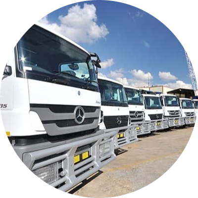
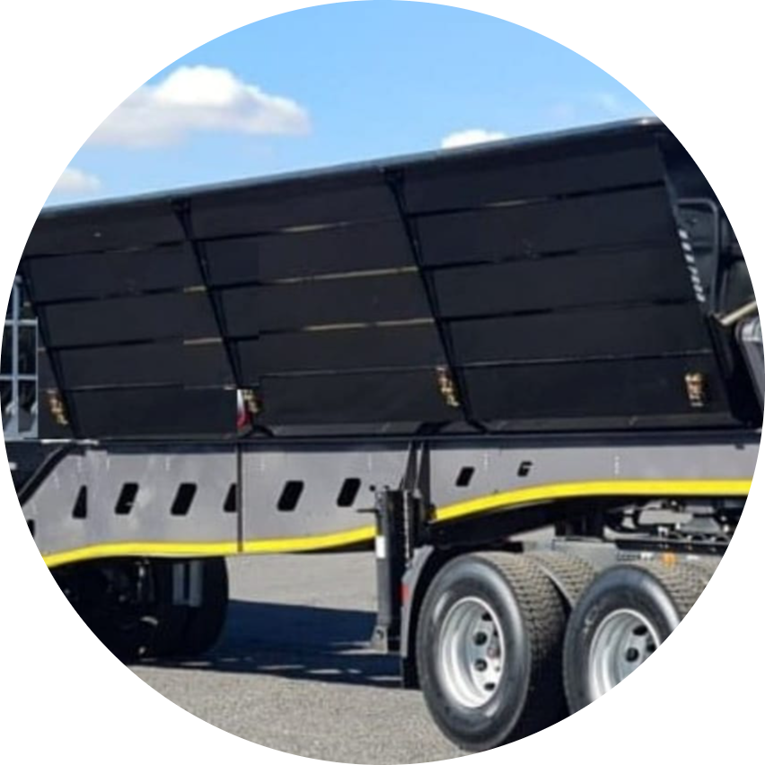

<!DOCTYPE html>
<html lang="en">

<head>
    <meta charset="UTF-8">
    <title>Amoeda Holdings</title>
    <link rel="stylesheet" href="css/style.css">
    <link rel="icon" href="favicon (1).ico">
    <link rel="preconnect" href="https://fonts.googleapis.com">
    <link rel="preconnect" href="https://fonts.gstatic.com" crossorigin>
    <link href="https://fonts.googleapis.com/css2?family=Merriweather&family=Montserrat&family=Sacramento&display=swap"
        rel="stylesheet">
</head>

<body>
    <div class="top-container">
        <h1 > AMOEDA HOLDINGS</h1>
        
        <h2> "Empowering Progress, Transforming Transportation:
            Safe, Efficient and Reliable Solutions"</h2>
    </div>

    <hr>

    <div class="middle-container">
        <div class="profile">
            <h2>ABOUT US</h2>
            <p>Amoeda Holdings is a company dedicated to offering a broad range
                of cost-efficient logistics solutions to various organizations and
                industries. The company has integrated and diversified with other
                establishments and technology in order to keep up to speed with
                future requirements and business demands.</p>
            <p>Amoeda Holdings is able to provide world-class transport and
                logistics solutions within South Africa and neighboring countries.
                Amoeda Holdings has been awarded contracts in Coal
                transportation, Chrome, and other minerals.
                We have worked with mines such as Tarisa Mina, and Two Rivers
                and transported dry foods to various clients.
                We strongly believe in superior quality service, social upliftment,
                and community empowerment are also high on our agenda.</p>

            <p>This female-led organization was inspired by CEO and Managing
                Director Kegomoditswe Mosiane.</p>
            <p>Kegomoditswe, also known as Kego was introduced to transport
                and logistics after winning a scholarship with CTA. Kego also
                worked for a transport and distribution company, she held various
                roles as, a data processor, Logistics admin and Operations Admin.
                Her passion for transportation, supply chain contributes positively
                to the growth of Amoeda Holdings.
            </p>
        </div>

        <hr>

        <div class="Mission">
            <h2>OUR MISSION</h2>
            <p>Our mission is to provide quality level of business solutions to
                corporate, institutions, and industries</p>

            <p>To nurture and grow our customer base through strategic
                solutions that are economically efficient and to respond rapidly
                to the changes in the economy and to client’s needs.</p>

            <p>To support and empower local communities through
                employment and developmental opportunities.</p>

            <hr>

            <div class="Vision">
                <h2>OUR VISION</h2>
                <p>To be Africa’s preferred service provider of quality transport and
                    logistics services to business and other institutions</p>

                <p>To empower our community through employment of skills and
                    work experience, to create opportunities for women in the
                    logistics industry.</p>

                <p>To help encourage young people by giving them opportunities
                    in our company, in essence inspiring them to better themselves
                    and take advantage of opportunities to enhance their skills.</p>

                <p>As a responsible and ethical corporate company, our vision is to
                    develop and implement client focused strategies to ensure
                    problem free and on time shipment of all cargo, to the benefit of
                    all parties involved. </p>

                <p>Through our ability to source, deliver and participate in joint
                    ventures or sub-contracting our services we believe that we can
                    achieve our ultimate goal.
                </p>
            </div>

            <hr>

            <div class="Services">
                <h2>OUR SERVICES</h2>
                <p>Amoeda Holdings is a full-service transportation and logistics company that
                    specializes in providing safe and efficient transportation solutions for a wide
                    range of materials and goods, including coal, chrome, quarry, sand, ore, soil,
                    and bricks. The company offers the following services:
                </p>

                <li> <strong>Heavy Haulage:</strong> Amoeda Holdings provides heavy haulage services for
                    materials and goods that require specialized equipment and expertise to
                    transport. The company has a 30-ton truck and a team of experienced
                    drivers and technicians who are equipped to handle heavy and oversized
                    loads</li>

                <li> <strong>Warehouse Service:</strong> The company provides warehousing services for
                    customers who require storage solutions for their goods. The warehouse
                    is secure, clean, and equipped with the latest technology to ensure that
                    goods are stored safely and efficiently.</li>

                <li> <strong>Distribution Service:</strong> We provide distribution services for customers
                    who require their goods to be delivered to multiple locations. The
                    company's team of experienced drivers and technicians is equipped to
                    handle a wide range of deliveries, from single pallets to full truckloads..</li>

                <li> <strong>Loading and Unloading Service:</strong> The company provides loading and
                    unloading services for customers who require assistance with moving
                    their goods from one location to another. The company's team of
                    experienced technicians is equipped to handle a wide range of loads,
                    from single pallets to full truckloads.
                    </li>

                <li> <strong>Project Management:</strong> Amoeda Holdings provides project management
                    services for customers who require assistance with managing their
                    transportation and logistics projects. The company's team of
                    experienced project managers is equipped to handle complex projects
                    and ensure that they are completed on time and within budget.</li>

                <li> <strong>Consulting Service:</strong> The company provides consulting services for
                    customers who require assistance with optimizing their transportation
                    and logistics operations. The company's team of experienced consultants
                    is equipped to provide expert advice and recommendations on a wide
                    range of transportation and logistics issues.
                    </li>
                
                <p>Amoeda Holdings is dedicated to providing high-quality transportation and
                    logistics services that meet the needs of its customers. The company's
                    services are designed to be flexible, efficient, and cost-effective, so
                    customers can be confident that they are getting the best value for their money</p>
            </div>

            <hr>

            <div class="Resources">
                <h2>OUR RESOURCES</h2>
                <p>Amoeda Holdings has the following resources to support its operations:
                </p>

                <li> <strong>Equipment:</strong> The company has one 30-ton truck that is equipped to
                    handle heavy and oversized loads. The truck is well-maintained and
                    regularly serviced to ensure that it is in good condition and safe to use.</li>

                <li> <strong>Personnel:</strong> The company has a team of experienced and highly skilled
                    personnel, including one director, two admins, one accountant, one
                    marketer, and a team of drivers and technicians. All personnel undergoes
                    regular training to ensure that they are equipped to provide the highestquality service to customers..</li>

                <li> <strong>Office:</strong> The company has a well-equipped office that provides a secure
                    and comfortable working environment for its personnel. The office is
                    equipped with the latest technology to support the company's
                    operations and ensure that it can provide the best possible service to
                    customers.</li>

                <li> <strong>Partner and Suppliers:</strong> Amoeda Holdings has partnerships with a
                    number of suppliers and partners to ensure that it has access to the
                    equipment and resources it needs to meet the needs of its customers.
                    The company collaborates with these partners and suppliers to ensure
                    that it is always able to provide the best possible service.
                    </li>

                <li> <strong>Health and Safety Equipment:</strong> The company provides personal
                    protective equipment (PPE) to its employees and requires that it is worn
                    at all times when necessary. The company also regularly maintains and
                    inspects its equipment to ensure that it is in good condition and safe to
                    use.</li>

                <p>Amoeda Holdings is well-equipped to provide a wide range of
                    transportation and logistics services to its customers. The company has the
                    resources and expertise it needs to provide safe, efficient, and cost-effective
                    services, so customers can be confident that they are getting the best
                    possible service.
                    </p>

            </div>

            <hr>
            <div class="Our Work Enthic & Competence">
                <h2>OUR WORK ETHICS & COMPETENCE</h2>
                <p>Amoeda Holdings is a world-class, competitive, and reputable transport and logistics
                    company that strives to maintain the highest standards of work ethics. The following
                    principles guide the company's operations:                    
                </p>

                <li> <strong>Integrity:</strong> The company operates with the highest standards of honesty and ethics and
                    is committed to building trust with its customers, employees, and partners.</li>

                <li> <strong>Professionalism:</strong> Amoeda Holdings values professionalism and strives to provide high quality services with a focus on customer satisfaction..</li>

                <li> <strong>Reliability:</strong> The company is committed to delivering goods safely and efficiently and
                    meeting customer expectations.</li>

                <li> <strong>Safety:</strong> The safety of employees, customers, and their goods is a top priority, and the
                    company implements strict safety standards to ensure the safe transportation of
                    goods
                    </li>

                <li> <strong>Respect:</strong> The company values the importance of respect and treats all employees,
                    customers, and partners with dignity and fairness..</li>
                
                <li><strong>Teamwork:</strong> The company recognizes the importance of teamwork and encourages
                    employees to work together to achieve common goals.</li>

                <p>By adhering to these work ethics, Amoeda Holdings is committed to maintaining its
                    reputation as a world-class, competitive, and reputable transport and logistics company.
                </p>


                <p>Amoeda Holdings is committed to maintaining a high level of competence in all areas of
                    its operations. The company achieves this through the following:
                    </p>
                
                    <li> <strong>Employee Training and Development:</strong> The company operates with the highest standards of honesty and ethics and
                        is committed to building trust with its customers, employees, and partners.</li>
    
                    <li> <strong>Modern Equipment:</strong> Amoeda Holdings values professionalism and strives to provide high quality services with a focus on customer satisfaction..</li>
    
                    <li> <strong>Process improvement:</strong> The company is committed to delivering goods safely and efficiently and
                        meeting customer expectations.</li>
    
                    <li> <strong>Customer Feedback:</strong> The safety of employees, customers, and their goods is a top priority, and the
                        company implements strict safety standards to ensure the safe transportation of
                        goods
                        </li>
                    
                    <p>By maintaining a high level of competence in all areas of its operations, Amoeda Holdings
                        is committed to delivering the highest quality services and ensuring customer satisfaction.</p>
            
            
            </div>

            <hr>

            <div class="Health & Safety">
                <h2>HEALTH & SAFETY </h2>
                <p>Amoeda Holdings is committed to maintaining the highest standards of
                    health and safety for its employees, customers, and the public. The
                    company implements the following health and safety policies and
                    procedures:
                </p>

                <li> <strong>Risk Assessments:</strong> : The company conducts regular risk assessments to
                    identify and manage potential health and safety hazards.
                    </li>

                <li> <strong>Employee Training:</strong> All employees undergo regular health and safety
                    training to ensure that they are aware of the hazards associated with
                    their work and how to minimize the risk of harm.</li>

                <li> <strong>Emergency Response:</strong> The company has an emergency response plan
                    in place to ensure that it can respond quickly and effectively in the
                    event of an incident.</li>

                <li> <strong>Equipment Maintenance:</strong> The company regularly maintains and
                    inspects its equipment to ensure that it is in good condition and safe to
                    use.
                    </li>

                <li> <strong>Safe Loading and Unloading:</strong> The company implements safe loading
                    and unloading procedures to minimize the risk of injury and damage to
                    goods.</li>

                <li><strong>PPE</strong>The company provides personal protective equipment (PPE) to its
                    employees and requires that it is worn at all times when necessary.</li>

                <p>Amoeda Holdings is committed to creating and maintaining a safe and
                    healthy working environment for all its employees and stakeholders. The
                    company implements these health and safety standards and policies to
                    ensure that it operates in a responsible and sustainable manner.
                    </p>

            </div>

            <hr>

            <div class="B-BBEE">
                <h2>B-BBEE IMPROVMENT & STATUS </h2>
                <p>Amoeda Holdings is 100% female youth-owned and is committed to
                    transforming the South African economy and promoting equality
                    and diversity in the workplace. The company has achieved a BBBEE level 1 status and is committed to maintaining and improving
                    its B-BBEE rating through a comprehensive improvement plan.
                </p>

                <p>The plan includes the following initiatives:
                </p>

                <li> Increasing the representation of Black employees in
                    management and decision-making positions
                    </li>

                <li> Providing training and development opportunities for Black
                    employees to enhance their skills and advance their careers.
                    </li>

                <li> Partnering with Black-owned suppliers and service providers to
                    support Black economic empowerment.
                    </li>

                <li> Investing in community development initiatives in Black
                    communities to promote socio-economic growth.
                    </li>

                <li> Continuously monitor and review the progress of the B-BBEE
                    improvement plan to ensure that the company is meeting its
                    transformation goals.
                    </li>


                <p>By implementing this comprehensive B-BBEE improvement plan,
                    Amoeda Holdings is committed to playing a leading role in
                    transforming the South African economy and promoting equality
                    and diversity in the workplace.
                    </p>

            </div>

            <hr>
            <div class="Partners,Suppliers & Customer">
                <h2>OUR PARTNERS, SUPPLIERS & CUSTOMERS </h2>
                <p>Amoeda Holdings values its relationships with partners, suppliers,
                    and customers and is committed to collaborating with each
                    stakeholder to provide the best possible service.                    
                </p>

                <p>The plan includes the following initiatives:
                </p>

                <li> <STRong> Partners</STRong> We partner with other transport and logistics companies
                    to provide a comprehensive service offering to our customers. For
                    example, Amoeda Holdings may partner with a company
                    specializing in air transportation to provide a complete door-to-door
                    service to our customers.                    
                    </li>

                <li> <strong>Suppliers</strong> We work with a range of suppliers to ensure that we
                    have access to the equipment and resources we need to operate
                    efficiently. For example, we collaborate with a supplier of GPS
                    tracking devices to improve the efficiency of its operations
                    </li>

                <li> <strong>Customers</strong> We are committed to building strong relationships with
                    our customers and ensuring that they are satisfied with the services
                    we provide. For example, we collaborate with a customer to
                    develop a customized transportation solution that meets their
                    specific needs. </li>
                    
                <p>By collaborating with partners, suppliers and customers, we are
                    able to provide a comprehensive and flexible service offering that
                    meets the needs of our stakeholders.
                    </p>

            </div>
            <hr>

            <div class="Members">
                <h2> BOARD MEMBERS</h2>                
                <div class="members">
                    
                    <p>Kemogditswe Mosiane</p>
                    <h3>CHIEF EXECETIVE OFFICER</h3>
                    <p><strong>Contact Numbers:</strong> 062 308 9714</p>
                    <p><strong>Email:</strong> mosianek600@gmail.com</p>
                </div>
                <hr>

                <div class="members">
                    
                    <p>Joshua Phiri</p>
                    <h3><strong>(CHIEF OPERATIONAL OFFICER)</strong> </h3>
                    <p><strong>Contact Numbers:</strong> 060 479 4783</p>
                    <p><strong>Email:</strong>joshuaisrael246@gmail.com</p>
                    
                </div>
                


            </div>
            <hr>
            <div class="Our recent Project">
                <h2>OUR RECENT PROJECTS </h2>

                <li> <STRong> Quarry Transport for ABC Mining </STRong> Amoeda Holdings transported
                    100 tons of quarry materials over a distance of 500 km for ABC
                    Mining. The company made R 10,000 per load and transported
                    the materials safely and efficiently.
                    </li>

                <li> <strong>Coal Transport for DEF Energy</strong> Amoeda Holdings transported
                    200 tons of coal over a distance of 800 km for DEF Energy. The
                    company made R 15,000 per load and ensured that the coal was
                    delivered on time and in good condition.                    
                    </li>

                <li> <strong>Sand Transport for GHI Construction</strong> Amoeda Holdings
                    transported 50 tons of sand over a distance of 300 km for GHI
                    Construction. The company made R 5,000 per load and provided
                    a reliable and cost-effective sand transportation solution. </li>
                
                <li><strong>Ore Transport for JKL Metals</strong> Amoeda Holdings transported 150
                    tons of ore over a distance of 600 km for JKL Metals. The
                    company made R 12,500 per load and ensured that the ore was
                    transported safely and efficiently. </li>
                    
                <p>By collaborating with partners, suppliers and customers, we are
                    able to provide a comprehensive and flexible service offering that
                    meets the needs of our stakeholders.
                    </p>

            </div>

            <div class="truck">
                
                
                
            </div>
            
            <hr>
            <div class="contact-me">
                <h2>Get In Touch</h2>
                <h3>we are committed to providing our customers with the best possible service</h3>
                <p class="contact-message">If you have any questions or comments, please feel
                    free to contact us via email, or pay us a visit at the given company address.</p>
                <a class="btn" href="mailto: amoedaholdings4@gmail.com">CONTACT ME</a>
            </div>
        </div>


        <div class="bottom-container">
        <p> <Strong>Telephone:</Strong> 27 62 308 9714</p>
        <p><Strong>CSD</Strong> MAAA0990612</p>
        <p><strong>Company Number:</strong>2020/604991/07 </p>
        <p><strong>Tax Number</strong>  9328369237 </p>
            <p class="copyright">©2023 Amoeda Holdings.</p>
        </div>


</body>

</html>